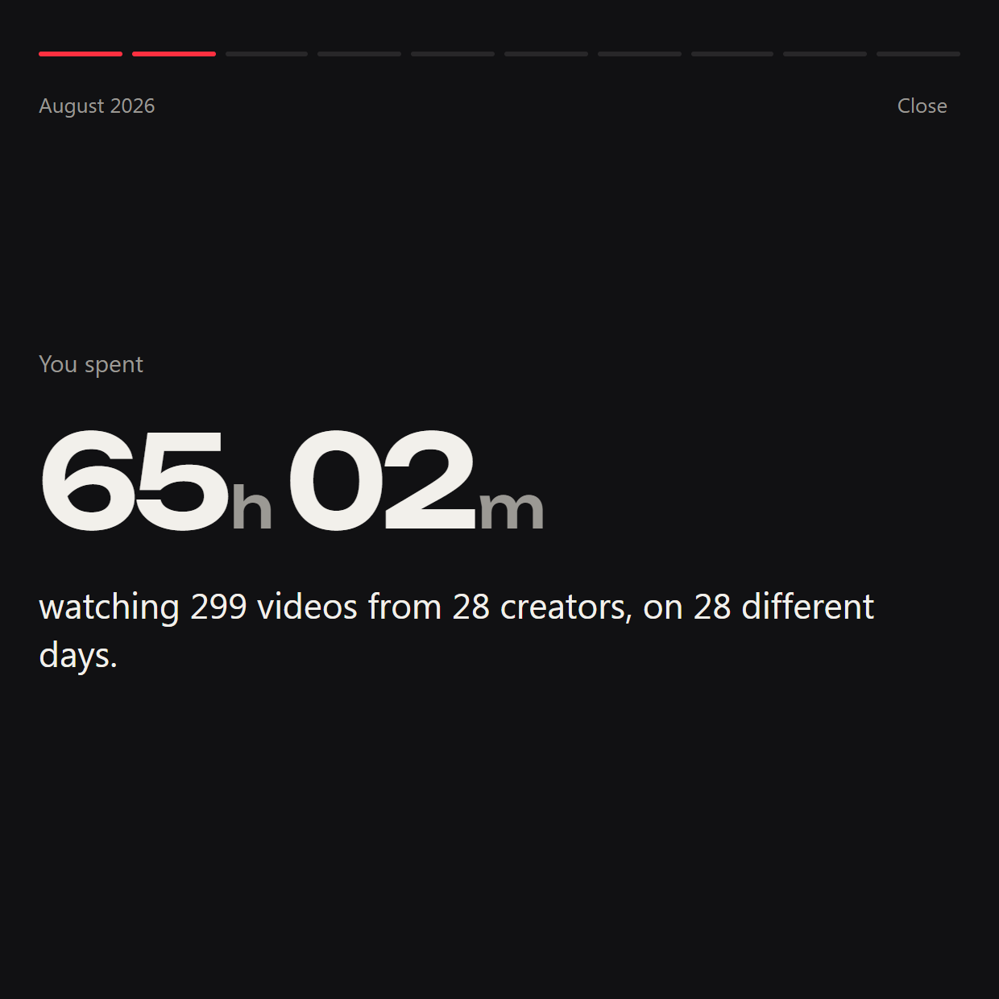
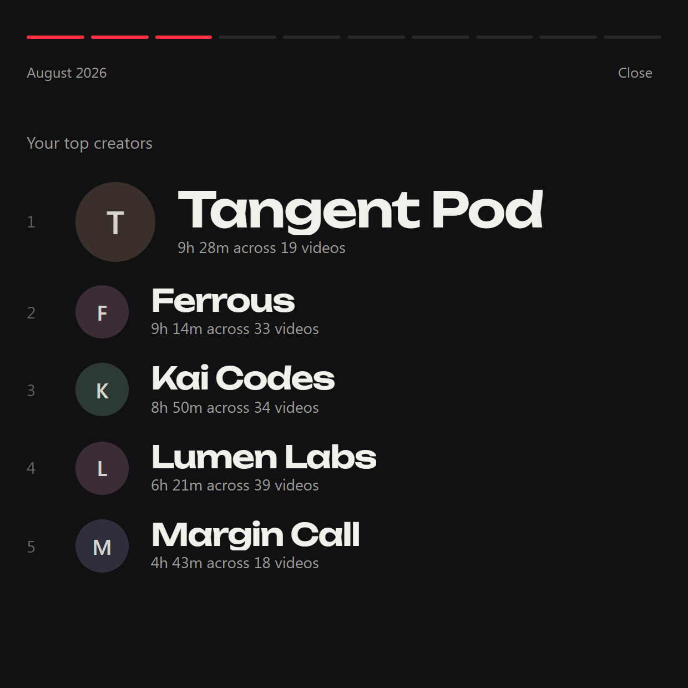
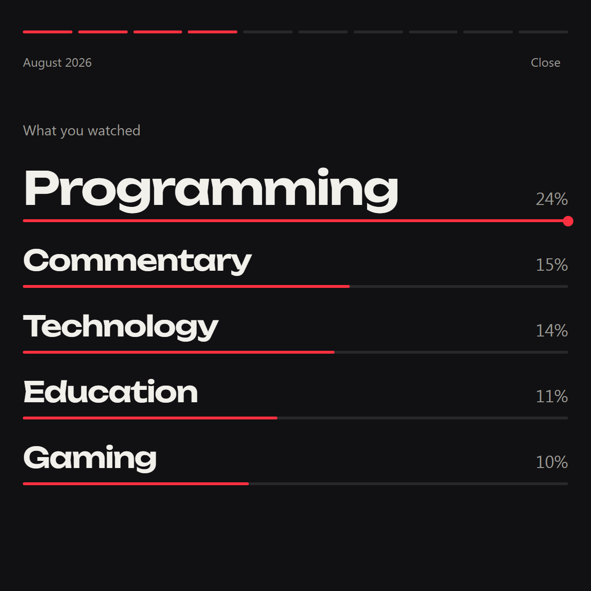
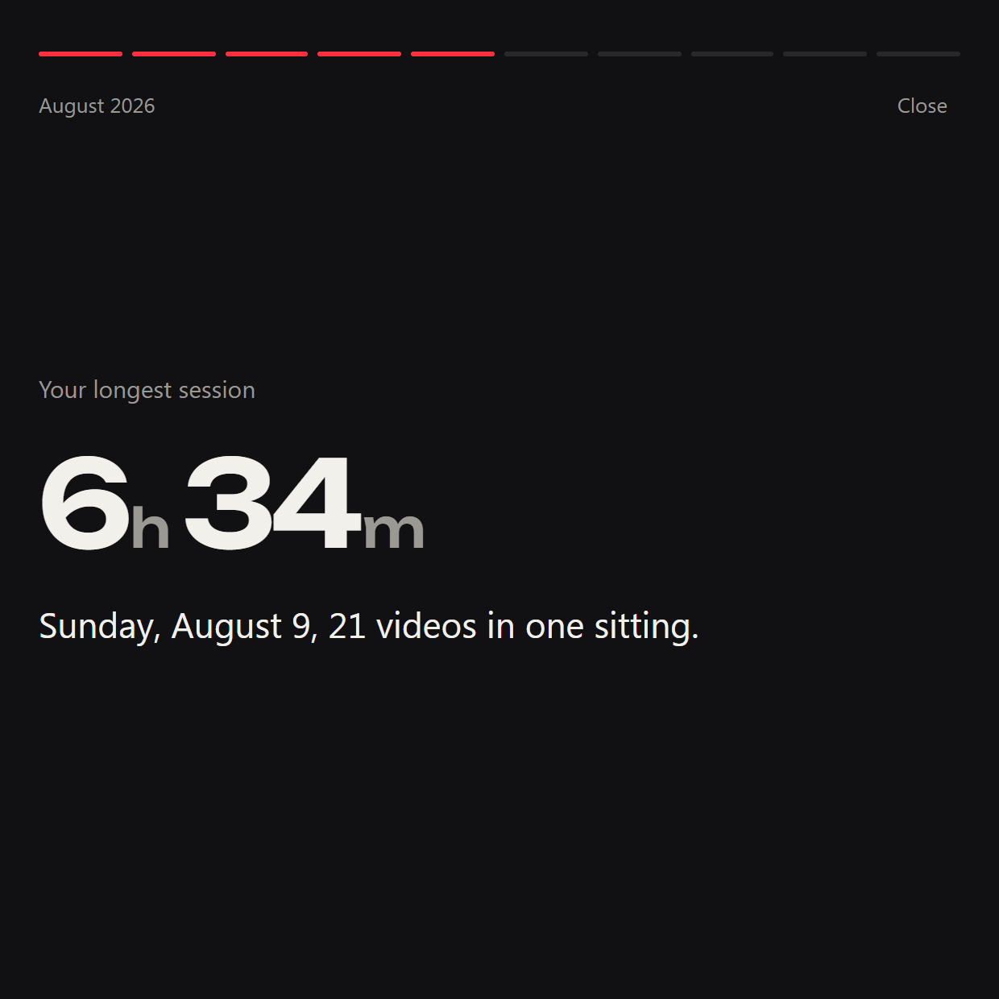
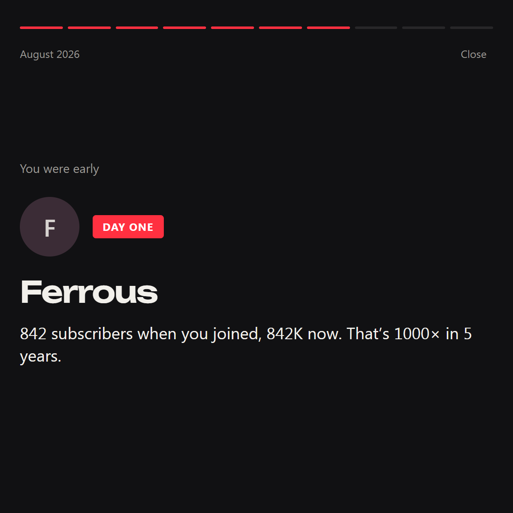
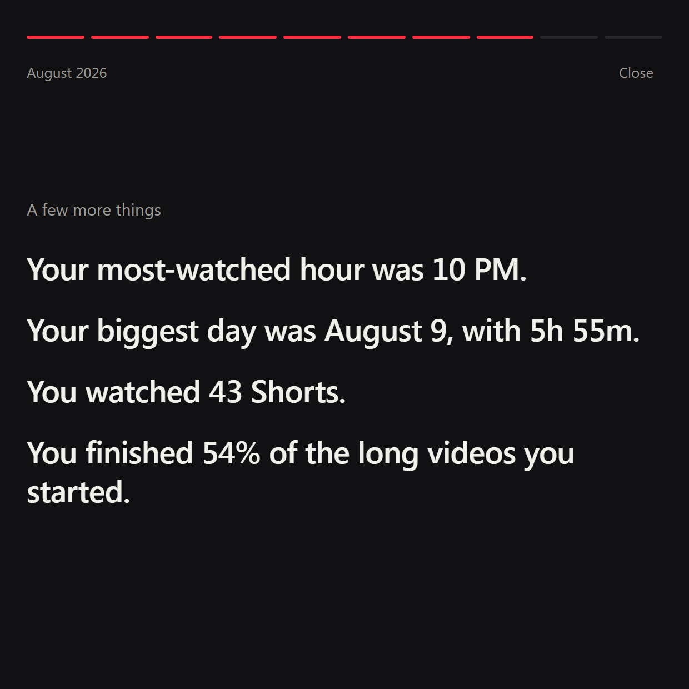
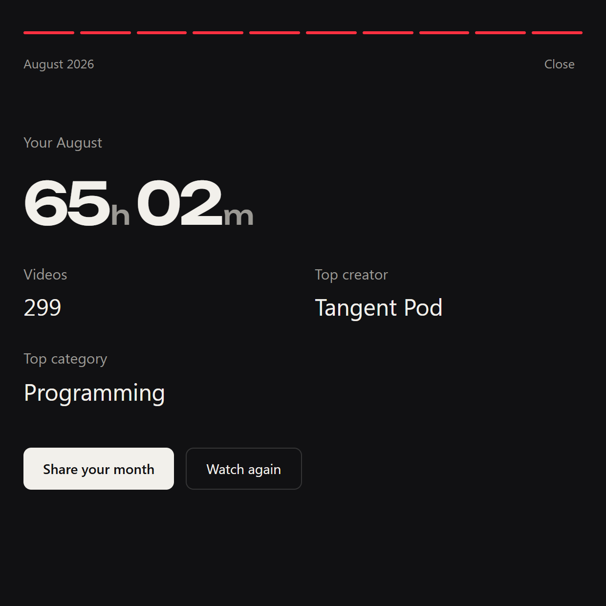
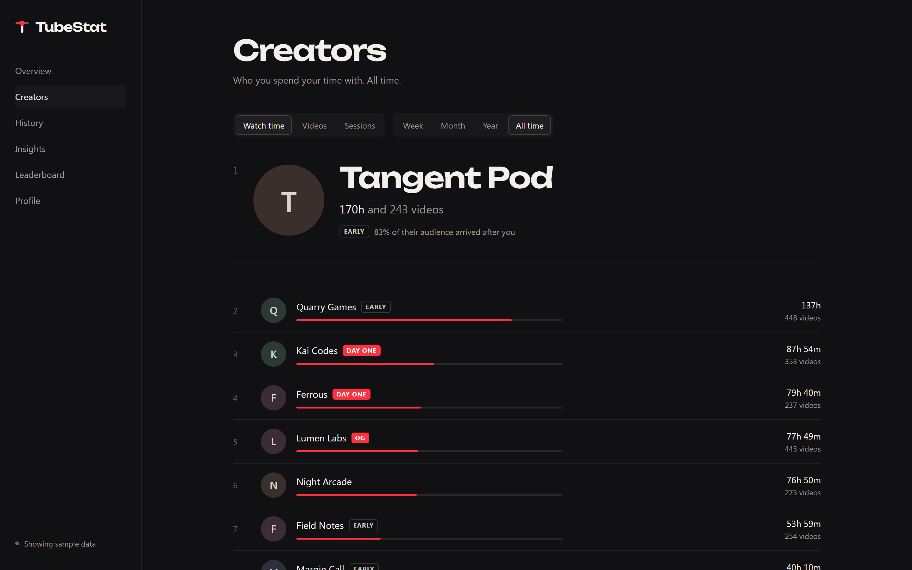

TubeStat
TubeStatYour YouTube life, tracked.
TubeStat is a Chrome extension that counts the seconds a video actually plays, remembers who made it, and turns years of watching into a profile you’ll want to open. It all stays in your browser.

Were you there before they blew up?
TubeStat records a creator’s subscriber count the moment you subscribe, then watches them grow. Try the math it uses.
The red marker is where you joined. Everything to its right is the audience that showed up after you.
Badges come from that share: DAY ONE before 99% of their audience, OG before 90%, EARLY before 60%. If YouTube can’t tell TubeStat the count on the day you subscribed, the badge is marked as an estimate.








Wrapped, whenever you want it.
Don’t wait for December. Play back any month or year: your hours, your top five, the session that got away from you, the creator you found first.

Then turn it into a card sized for your feed.
It gets more interesting the longer it runs.
Who you actually watch.
Rank creators by hours, videos, or sessions, for this week or all time. The badges show where you got in early.

Every month, kept.
Each month gets its own page with its top creators and longest session. The Time Machine jumps back to any of them. Import Google Takeout to start with years of history.

Patterns, in plain sentences.
When you watch most, how gaming gave way to programming, which three creators take half your time. Written from your data, with no guesses about why.

Nothing made up.
YouTube doesn’t share everything, so every number in TubeStat says where it came from.
| What | Status | How |
|---|---|---|
| Watch time and completion | Measured | Seconds of real playback. Pauses and ads don’t count, and skipping to the end isn’t finishing. |
| Video, channel, category | From YouTube | Read from YouTube’s own player as you watch. |
| Subscriber growth | From first visit | Snapshotted daily. YouTube doesn’t publish old counts, so growth starts when TubeStat first sees a creator. |
| When you subscribed | When available | Captured when you click Subscribe, or read from your account if you connect it. |
| Viewing before install | Imported | From Google Takeout. Real videos and dates, no watch time. |
Your history stays yours.
- On your device.Stored in your browser. No TubeStat server, no account.
- Never uploaded.The only requests are for thumbnails, plus your subscriptions if you choose to connect.
- Gone in one click.Export it all as JSON, or delete everything from Profile. Read the privacy policy.
Two minutes, once.
- Download the zip and unzip it.
- Open
chrome://extensionsand switch on Developer mode, top right. - Click Load unpacked and pick the unzipped folder.
- Watch YouTube. Your first video shows up within seconds.